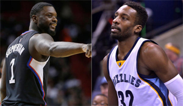

Just another blog post
33 comments Clippers are trading Lance Stephenson for Jeff Green on the Memphis Grizzlies
The Los Angeles Clippers received forward Jeff Green in a trade that sends guard Lance Stephenson to the Memphis Grizzlies, the Clippers announced Thursday.
Memphis also receives a first-round pick in the trade, ESPN’s Marc Stein reports. The pick is a heavily protected choice in the 2019 draft, according to ESPN’s Zach Lowe.
Stephenson was acquired by Los Angeles in an off-season trade with the Hornets that sent Matt Barnes and Spencer Hawes to Charlotte. He played 43 games this season, averaging 15.8 minutes per game.
Green played in all of Memphis’s 53 games this season, starting 31. He is averaging 12.2 points, 4.5 rebounds and 1.8 assists per game.
Sports Illustrated. N.p., n.d. Web. 1 Mar. 2016.